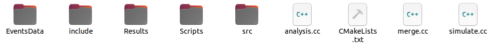
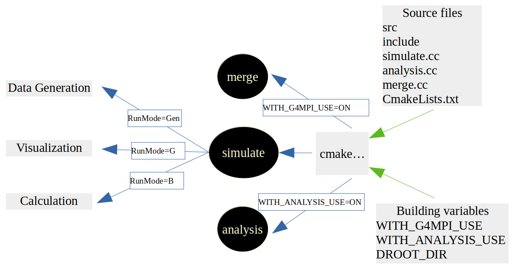

DoseCalcs-Core Installations
Package Requirements
prerequiered ubuntu libraries
$ sudo apt-get install cmake build-essential libxaw7-dev libxaw7 mesa-common-dev libglu1-mesa-dev -y qt5-default libicu-dev
CMake
Download CMake from: https://cmake.org/download/
Unpack the CMake source package cmake.XX.XX.tar.gz to a location of your choice. For illustration only, this guide will assume it’s been unpacked in a directory named for example at /home/User/Desktop, so that the CMake source package sits in a subdirectory. (cmake.XX.XX means the version.Release of CMake). The unpacked source now is in : /home/User/Desktop/cmake.XX.XX
$ cd /home/User/Desktop $ mkdir cmake_install $ cd /home/User/Desktop/cmake.XX.XX $ ./configure --prefix=/home/User/Desktop/cmake_install $ gmake -j4 $ gmake install
Xerces-C++ headers and libraries
Download Xerces-C++ from: https://xerces.apache.org/xerces-c/download.cgi
Unpack the Xerces-C++ source package Xerces-C++.XX.XX.tar.gz to a location of your choice. For illustration only, this guide will assume it’s been unpacked in a directory named for example at /home/User/Desktop, so that the Xerces-C++ source package sits in a subdirectory. (Xerces-C++.XX.XX means the version.Release of Xerces-C++). The unpacked source now is in : /home/User/Desktop/Xerces-C++.XX.XX
$ cd /home/User/Desktop $ mkdir xerces_install $ cd /home/User/Desktop/Xerces-C++.XX.XX $ ./configure --prefix=/home/User/Desktop/xerces_install $ make -j4s $ make install
Geant4
Download geant4 from: http://geant4.web.cern.ch/geant4/support/download.html
Unpack the Geant4 source package geant4.XX.XX.tar.gz to a location of your choice. For illustration only, this guide will assume it’s been unpacked in a directory named for example at /home/User/Desktop, so that the Geant4 source package sits in a subdirectory. (geant4.XX.XX means the version.Release of Geant4). The unpacked source now is in : /home/User/Desktop/geant4.XX.XX
$ cd /home/User/Desktop $ mkdir geant4_build $ mkdir geant4_install $ cd geant4_build $ /home/User/Desktop/cmake_install/bin/cmake -DCMAKE_INSTALL_PREFIX=/home/User/Desktop/geant4_install -DGEANT4_BUILD_MULTITHREADED=ON -DGEANT4_USE_QT=ON -DGEANT4_USE_OPENGL_X11=ON -DGEANT4_INSTALL_DATA=ON -DGEANT4_USE_GDML=ON -DXERCESC_ROOT_DIR=/home/User/Desktop/xerces_install /home/tarik/Desktop/geant4.XX.XX
(if fails, rm -rf * in /geant4_build before rerunning CMake). cmake -D and Tab, will show you all the CMake variables possibilities to build geant4 as you need.
$ make -j4 $ make install
-DXERCESC_ROOT_DIR=<path_to_xercesc> : pointing to the path where the Xerces-C++ XML parser package is installed in your system.
To have Geant4 setup automatically at each login, open ~/.bashrc configuration file, and append the command
source /home/User/Desktop/geant4_install/bin/geant4.sh
In terminal, execute
source ~/.bashrc
MPICH
Download MPICH from https://www.mpich.org/downloads/ or
Unpack the MPICH source package MPICH.XX.XX.tar.gz to a location of your choice. For illustration only, this guide will assume it’s been unpacked in a directory named for example at /home/User/Desktop, so that the MPICH source package sits in a subdirectory. (MPICH.XX.XX means the version.Release of MPICH). The unpacked source now is in : /home/User/Desktop/MPICH.XX.XX
$ cd /home/User/Desktop $ mkdir mpich_install $ cd /home/User/Desktop/MPICH.XX.XX $ ./configure --disable-fortran --prefix=/home/User/Desktop/mpich_install $ make -j4 $ make install To have MPICH setup automatically at each login, open ~/.bashrc configuration file, and append the commandMPI_ROOT=/home/User/Desktop/mpich_install export PATH=$MPI_ROOT/bin:$PATH
In terminal, execute
source ~/.bashrc
The related variables used in DoseCalcs building should be set to : -DWITH_G4MPI_USE=ON, -DCMAKE_CXX_COMPILER=/home/User/Desktop/openmpi1.8.1/install/bin/mpicxx, -DCMAKE_C_COMPILER=/home/User/Desktop/openmpi1.8.1/install/bin/mpicc.
ROOT Analysis System
Installing dependencies (https://root.cern/install/dependencies/):
$ sudo apt-get install dpkg-dev cmake g++ gcc binutils libx11-dev libxpm-dev libxft-dev libxext-dev python libssl-dev gfortran libpcre3-dev xlibmesa-glu-dev libglew1.5-dev libftgl-dev libmysqlclient-dev libfftw3-dev libcfitsio-dev graphviz-dev libavahi-compat-libdnssd-dev libldap2-dev python-dev libxml2-dev libkrb5-dev libgsl0-dev
Installing ROOT:
Download Root from: https://root.cern/downloading-root
Unpack the Root source package root-X.XX.XX.tar.gz to a location of your choice. For illustration only, this guide will assume it’s been unpacked in /home/User/Desktop , so that the root source package sits in a subdirectory . (/root-X.XX.XX , X is the version). The unpacked source now is in : /home/User/Desktop/root-X.XX.XX
$ cd /home/User/Desktop $ mkdir root_build $ mkdir root_install $ cd root_build $ /home/User/Desktop/cmake_install/bin/cmake -DCMAKE_INSTALL_PREFIX=/home/User/Desktop/root_install /home/User/Desktop/root-X.XX.XX $ make -j4 $ make install To have ROOT setup automatically at each login, open ~/.bashrc configuration file, and append the following commandsource /home/User/Desktop/root_install/bin/thisroot.sh
In terminal, execute
source ~/.bashrc
DoseCalcs building
DoseCalcs is available for download at https://github.com/TarikEl/DoseCalcs/archive/refs/heads/main.zip. The source will look like this after extraction:

The build step produces executables as illustrated below:

Building Command
Considering that DoseCalcs source directory path is /home/User/Desktop/DoseCalcs. Enter the following into the terminal:
$ cd /home/User/Desktop $ mkdir DoseCalcs_build $ cd /DoseCalcs_build
Using MPI computation mode:
$ /home/User/Desktop/cmake_install/bin/cmake -DCMAKE_BUILD_TYPE=Debug -DWITH_GEANT4_UIVIS=ON -DWITH_GDML_USE=ON -DWITH_ANALYSIS_USE=ON -DWITH_G4MPI_USE=ON -DCMAKE_CXX_COMPILER=/home/User/Desktop/mpich_install/bin/mpicxx -DCMAKE_C_COMPILER=/home/User/Desktop/mpich_install/bin/mpicc /home/User/Desktop/DoseCalcs $ make -j4
Using multi-threaded or sequential computation mode:
$ /home/User/Desktop/cmake_install/bin/cmake -DCMAKE_BUILD_TYPE=Debug -DWITH_GEANT4_UIVIS=ON -DWITH_GDML_USE=ON -DWITH_ANALYSIS_USE=ON -DWITH_G4MPI_USE=OFF /home/User/Desktop/DoseCalcs $ make -j4
Building Variables
-DWITH_GDML_USE : Use GDML geometry in the simulation (if Geant4 is built with Xerces-C++)
-DWITH_DCMTK_USE : Used with DICOM voxelized geometry, this allow to read DICOM files using DCMTK Packages
-DDCMTK_DIR : Used If -DWITH_VOX_USE and -DWITH_DCMTK_USE set to ON, the value of this variable is the installation path of DCMTK
-DWITH_ANALYSIS_USE : Used If we want to generate graphs using ROOT ANALYSIS SYSTEM, CMake generates an executable called [analysis], The use of ROOT requires the installation path of ROOT libraries to be given with -DROOT_DIR while building the code.
-DROOT_DIR : Used if -DWITH_ANALYSIS_USE set to ON. The value of this variable is the installation path of ROOT libraries. It should be set if ROOT not setup automatically.
-DWITH_G4MPI_USE : Used for MPI DoseCalcs computation mode, to run the application on a cluster containing multiple computers. Each computer has a number of cores. G4MPI usage necessitates the use of the CMake variables -DCMAKE_C_COMPILER and -DCMAKE_CXX_COMPILER. DoseCalcs is built with the use of G4MPI libraries. If a user uses just multi-threading or sequential computation modes, -DWITH_G4MPI_USE should be set to OFF, and there is no need to use -DCMAKE_C_COMPILER and -DCMAKE_CXX_COMPILER.
-DCMAKE_C_COMPILER : Used if -DWITH_G4MPI_USE set to ON, the value of this variable is the path of mpicc.
-DCMAKE_CXX_COMPILER : Used if -DWITH_G4MPI_USE set to ON, the value of this variable is the path of mpicxx.
After DoseCalcs building, the three directories [EventsData], [Scripts] and [Results] in the main application directory structure shown in figure ref{SrcDir}, are copied to the build directory. Where scripts directory contains TissueRadiationFactors.mac file which is used in calculation of the equivalent dose (H) and the effective dose (E). It can also contain the macros file and geometry files. The directory [EventsData], will contain the generated data files. Finally, the [Results] directory will contain all the results of the simulation, text files, and ROOT-generated graphs and histograms. Besides these directories, the file simulate.cc serves to generate executable [simulate], the same as analysis.cc and merge.cc, which serve to generate [analysis] and [merge] executable files respectively, as shown in the figure ref{BuildDir}.
All of the executables [simulate], [merge], and [analysis], and optionally the directories [EventsData], [Results], and [Scripts], should exist in the build directory, which will be the user workspace, after DoseCalcs has been successfully built.